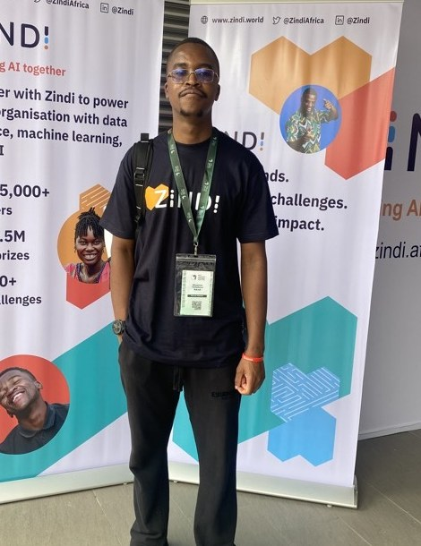

Shannon Sikadi - AI Engineer, Applied AI Researcher, AI Hackathon Lead and Zindi Ambassador with an actuarial science background. I build machine learning systems, open datasets and AI capacity for the places that need them most.
Ranked #177 of 17,747 participants globally on Zindi and #4 of 331 in Zimbabwe. 3rd place at the Cassava Technologies x Deep Learning Indaba Hackathon 2026. Business Systems Analyst at Minerva Risk Advisors and AI Hackathon Lead at Deep Learning IndabaX Zimbabwe.

I am an AI Innovator and aspiring Applied AI Researcher working at the intersection of machine learning, data infrastructure and AI governance. My work spans computer vision, natural language processing, large language models and predictive analytics, applied to problems that matter in African markets: credit risk, telecom network reliability, agriculture, financial inclusion and pensions.
I have been building hands-on since 2021, starting with community hackathons at Data Science Zimbabwe and progressing to competing, consulting and organising at continental level. In 2025 I became a Zindi Ambassador, and in 2026 I worked with the Zindi team as a freelance AI Consultant, attended the Deep Learning Indaba in Lagos, the largest AI conference in Africa, and placed 3rd in its Cassava Technologies hackathon.
Beyond models, I care about the layer underneath them. When we could not find loan data for a Zimbabwean hackathon challenge, I designed and published a synthetic loan default dataset calibrated to Zimbabwe's lending landscape. It has since been downloaded and used by more than 450 people. Data is the real AI infrastructure, and Africa needs more of it.
Day to day I work as a Business Systems Analyst at Minerva Risk Advisors, which is where the analytical side of my work meets delivery. I sit between the business and the technical team: gathering requirements, mapping processes and data flows, writing specifications and acceptance criteria, running user acceptance testing and building the reporting that management makes decisions on. It has taught me something models alone cannot, that a technically correct solution still fails if it does not fit how people actually work. That perspective shapes how I scope AI projects: start from the process and the decision, not the algorithm.
My foundation is actuarial science, which shapes how I approach modelling: risk first, assumptions stated, results defensible. I combine that with applied machine learning and ITU credentials in AI governance and AI ethics, and I give it back through training Zimbabwe's national AI Olympiad teams and mentoring students at the University of Zimbabwe Actuarial Society.
A selection of projects spanning applied machine learning, open data and production software.
An open-source, community-driven Python library bringing actuarial modelling into a modern, reproducible workflow. Designed to give actuaries and data scientists a shared toolkit for mortality, reserving and risk computation, with a contribution model that lets the African actuarial community shape the roadmap. Systems analysis and full-stack build, and where my actuarial training and my software work meet.
View on GitHub →A fully synthetic tabular dataset of 38,932 loan records across 22 columns with a binary default target, calibrated to Zimbabwe-relevant lending patterns using public aggregate statistics including RBZ reports and a probabilistic risk-generation process. Privacy preserving by design, built for education, research, benchmarking and credit-risk prototyping. Published as version 1.0 in June 2026 and downloaded by 490+ people.
View on Zenodo →Designed and led a national machine learning challenge on loan default risk in Zimbabwe's banking sector, built on the synthetic dataset above. 238 participants and 147 active teams built end-to-end solutions scored on ROC-AUC with precision, recall and F1 as diagnostics, plus an innovation track for connecting models to real banking stacks such as risk dashboards and origination APIs.
View the challenge →Built a model that reads telecom network logs, alarms, handover failures and configuration drift, and does more than flag anomalies: it identifies the root cause and explains what happened and what to do next. Placed 3rd in a field of 130 AI practitioners from 22 African countries at the Deep Learning Indaba 2026, with the winning model trained during a 17-hour airport layover.
View the challenge →A $500 USD image classification challenge for precision agriculture in Zimbabwe, distinguishing Common Rust, Gray Leaf Spot, Blight and healthy maize leaves. Framed for real conditions: accurate under varying lighting, angles and image quality, and light enough to run offline on mobile devices for smallholder farmers. 140 participants.
Organised a multi-modal deep learning challenge on detecting spoofed faces from printed photos, video replays, 3D masks and deepfakes, using colour and depth imagery. Aimed at secure authentication for mobile banking, access control and identity verification in resource-constrained environments. Run with Zindi in partnership with Deep Learning IndabaX Zimbabwe.
An end-to-end regression project predicting house prices from property characteristics, covering exploratory analysis, feature engineering on mixed categorical and numerical attributes, model comparison and error analysis. A foundational piece of my modelling practice, and directly relevant to valuation and pricing work.
View the code →A model predicting which individuals across Kenya, Rwanda, Tanzania and Uganda are most likely to hold or use a bank account, where only around 14% of adults do. Beyond the score, the value is diagnostic: the model surfaces the factors driving financial security, and bank access is what lets households save and businesses build creditworthiness for loans and insurance. Ranked 422 of 2,708 on Zindi.
View the code →Computer vision and OCR pipeline to identify and digitise information in analog cadastral plans for the Barbados Lands and Surveys Plot Automation Challenge. Ranked 25th of 154 participants in an advanced-tier competition combining geospatial data, document understanding and OCR.
Competitive machine learning is where the work gets scored by strangers. A selection of ranked results from 2021 to 2026.
| Year | Competition | Domain | Rank |
|---|---|---|---|
| 2026 | Cassava AI Root Cause Detective Hackathon | LLMs, fault detection, edge AI | 3rd place |
| 2026 | Barbados Lands and Surveys Plot Automation Challenge | Computer vision, OCR, geospatial | 25 / 154 |
| 2026 | GeoAI Aquaculture Pond Identification (FAO & ITU) | Classification, GIS, agriculture | 330 / 610 |
| 2023 | Zindi Financial Inclusion in Africa | Prediction, financial services | 422 / 2,708 |
| 2023 | UmojaHack Africa: Carbon Dioxide Prediction (Beginner) | Prediction, climate | 121 / 309 · Bronze |
| 2022 | PRACTICE Beginner Challenge (air quality, satellite) | Prediction, earth observation | 12 / 106 |
| 2022 | Insurance Prediction Challenge | Prediction, insurance | 69 / 651 |
| 2022 | Amini Soil Prediction Challenge | Earth observation, agriculture | 224 / 305 |
| 2021 | Fire Extent Prediction Challenge (Data Science Zimbabwe) | Prediction, wildfire, environment | 3 / 7 |
Won 3rd place in the Cassava AI Hackathon, applying AI and data-driven approaches to a real-world telecom challenge. The experience strengthened my problem-solving and machine learning skills and my ability to collaborate under competitive, time-constrained conditions.
Selected as one of the top 12 teams in the world for the on-site final phase of the ITU Data Hackathon, run by the ITU Telecommunication Development Bureau alongside the World Telecommunication/ICT Indicators Symposium 2026, with the ITU Regional Office for Asia and the Pacific, the Area Office for South Asia and Innovation Centre in New Delhi, and financial support from the European Union.
The challenge was to mobilise data analysis to find connectivity gaps and the subpopulations left behind on the path to universal and meaningful connectivity: identifying geographical areas with limited connectivity and giving policymakers a typology to target, profiling populations excluded by infrastructure, service quality, affordability or skills, and combining country-level, geospatial, infrastructure, crowdsourced speed-test, demographic and household-survey data through advanced inference methods. Teams delivered maps, dashboards and policy recommendations with reproducible Python notebooks, judged on diversity of data sources, technical processing, documentation and the pitch to the jury.
Recognised for leading the preparation and coordination of a nationwide AI hackathon with over 150 participants. Associated with WorldQuant University.
Competed with the Minerva Risk Advisors team in the WIZ Quiz Luncheon hosted by Women In Insurance Zimbabwe, achieving 2nd place.
Recognised for innovation in automating the Wanamari calculation into the Wanamari Web Calculator.
Competitions are only half the work. The other half is making sure more people get to the start line.
Represent Zindi across the Zimbabwean and wider African data science community, growing participation in competitions, mentoring newcomers and running community sessions. Ranked #177 of 17,747 participants globally and #4 of 331 in Zimbabwe.
Trainer for NOAI Zimbabwe 2026 and coach to the national teams. Set and marked the practical AI exam, then ran intensive evening training. Teams placed 4th and 7th in Africa, two students won individual bronze medals, and Zimbabwe's first high school team competed at IOAI 2026 in Astana.
An ongoing invited mentorship role rather than one-off sessions, spanning two years of guiding students into technical careers in AI, machine learning and data science. Delivered "Breaking into AI and Machine Learning: Tools, Pathways and Real-World Practice" with Zindi, walking students through writing and running code for their very first Zindi submission.
Mentored actuarial students on pairing exams with data science and AI skills, and on how technical capability differentiates an actuarial profile in a market where AI augments rather than replaces professional judgment.
Actuarial modelling, statistics, financial mathematics and risk
International Telecommunication Union · Issued Jul 2026 · Credential ID c0359d03-b709-494f-9820-2338d7477d41
International Telecommunication Union · Issued Jun 2026
WorldQuant University · Dec 2024 - Apr 2025
WorldQuant University · Sep 2022 - Dec 2022
Microsoft · Cloud AI services, computer vision, NLP and responsible AI
Selected in 2025 to represent Zindi, Africa's largest data science community, growing participation and mentoring new practitioners.
Selected to attend Africa's largest AI and machine learning gathering in Lagos, Nigeria, and placed 3rd in its flagship hackathon.
Author of the Zimbabwe Loan Default Prediction Dataset on Zenodo, version 1.0, published June 2026 and adopted by 490+ users.
Open to projects and collaboration in applied AI, machine learning engineering, AI research and AI policy and governance. Based in Harare, available remotely and on site.